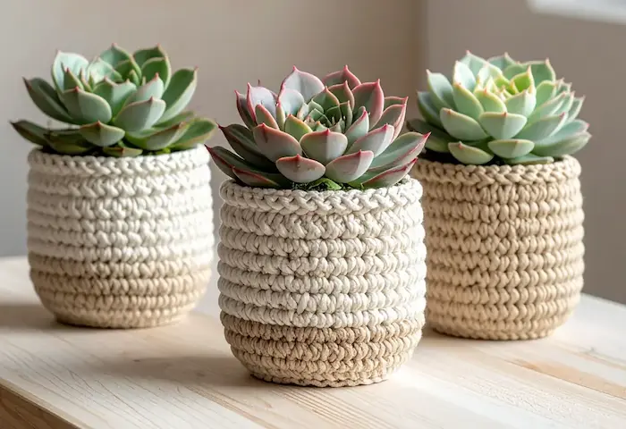

Guides og inspiration
Kom i gang med hækling
Klar til at tage det første sting? Denne guide hjælper dig i gang – enkelt, hyggeligt og helt fra begyndelsen.
Læs artiklen

Trending
Læs om de mest populære hækletrends lige nu, og få inspiration til nye spændende projekter og mønstre.
Læs artiklen